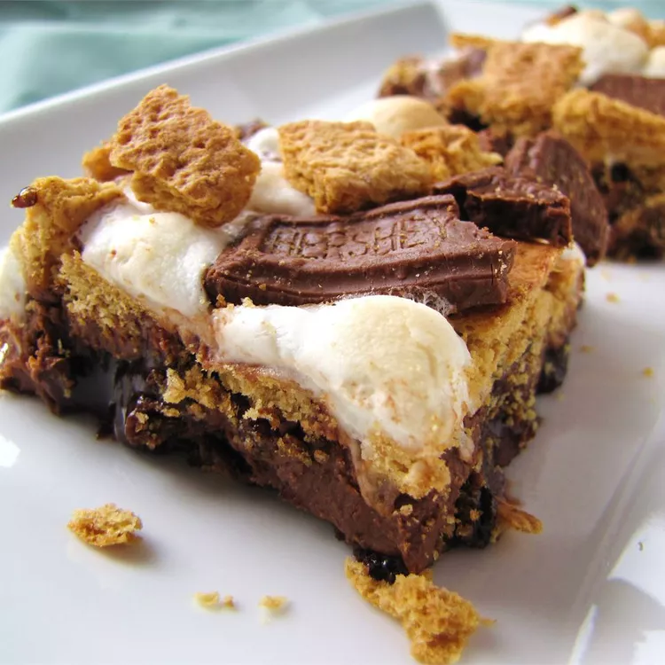

Smores Brownies

Description:
These delicious brownie s'mores let you enjoy the popular campfire treat
on top of a brownie. I consider myself a gourmet cook and originally
thought these would just appeal to kids, but everyone loves them!
Ingredients:
- 1 (18.3 ounce) package fudge brownie mix (such as Betty Crocker)
- ½ cup vegetable oil
- 2 large eggs
- 3 tablespoons water
- 6 graham crackers
- 1 ½ cups miniature marshmallows
- 8 (1.5 ounce) bars milk chocolate, coarsely chopped
Instructions:
- Preheat the oven to 350 degrees F (175 degrees C). Grease
a 9x13-inch baking dish.
- Make the brownies: Stir brownie mix, oil, eggs, and water
together in a medium bowl until well blended. Pour batter
into the prepared pan.
- Bake in the preheated oven for 15 minutes.
- While the brownies are baking, make the topping: Break
graham crackers into 1-inch pieces and place into a bowl.
Add marshmallows and chopped chocolate and toss to combine.
- Remove brownies from the oven and sprinkle with topping
ingredients. Return to the oven and continue to bake until a
toothpick inserted 2 inches from the side of the pan comes out
clean, 7 to 10 more minutes.